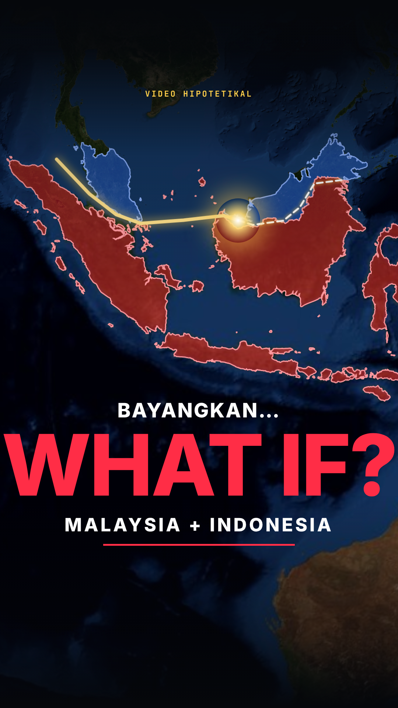
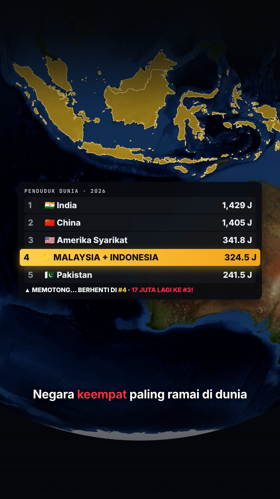
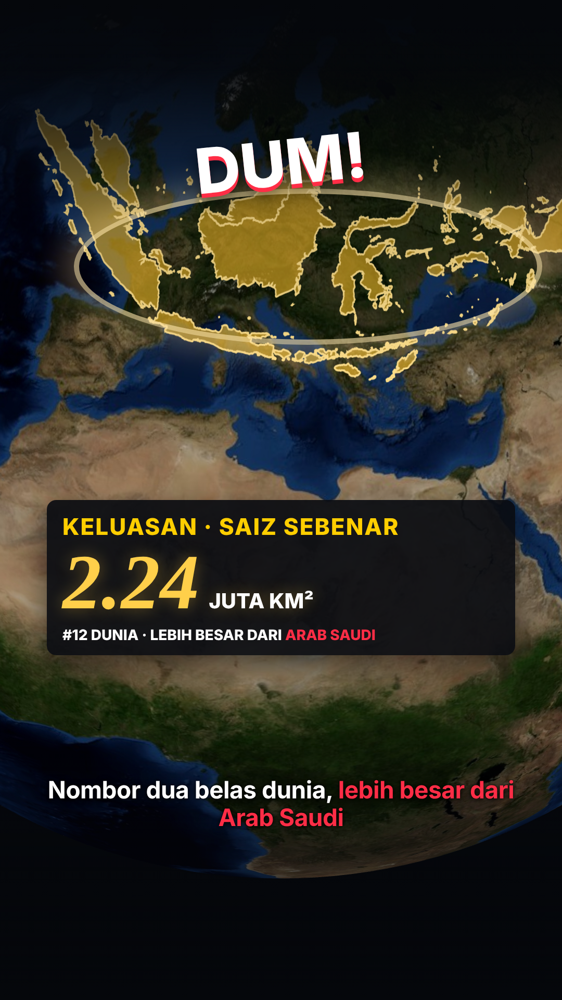
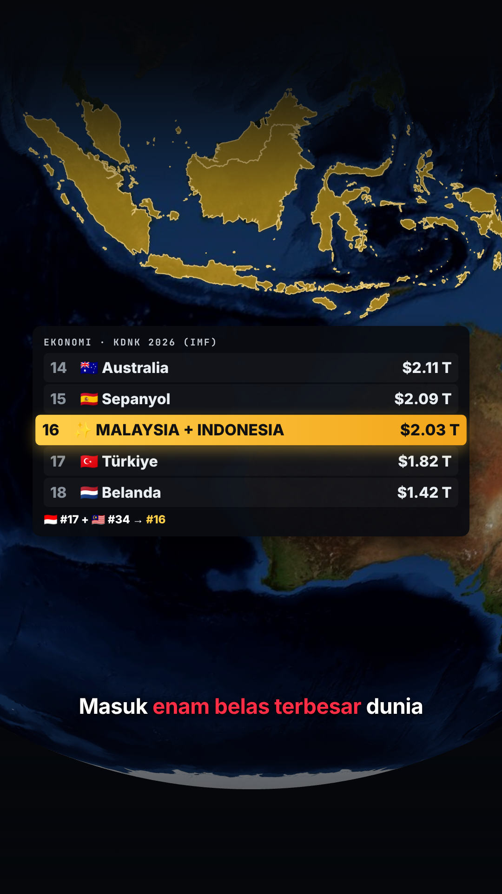
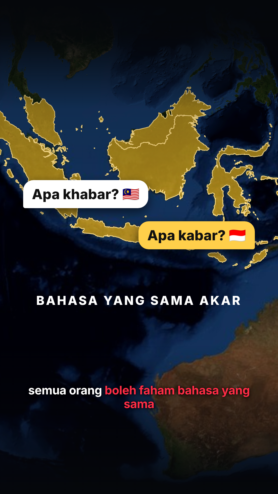
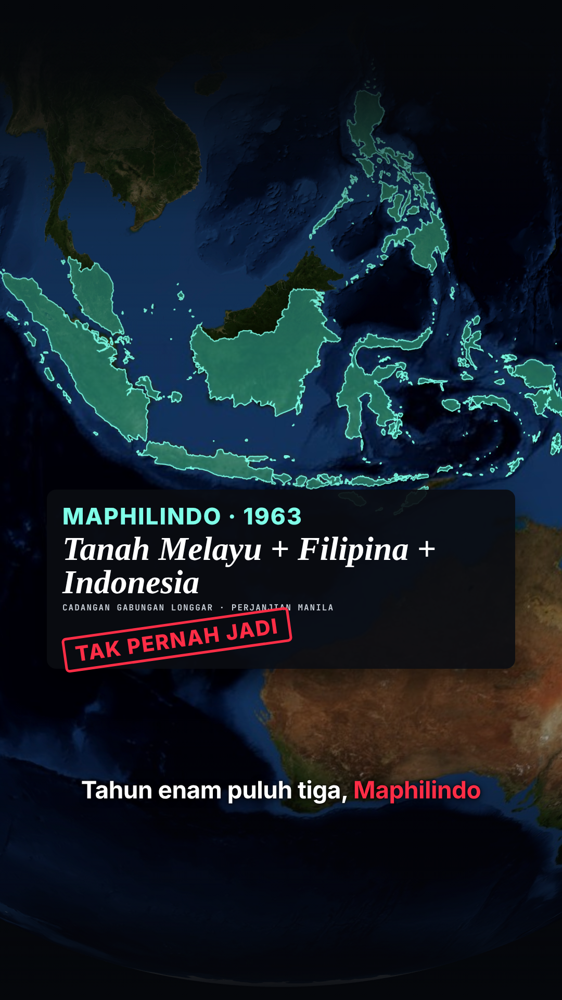
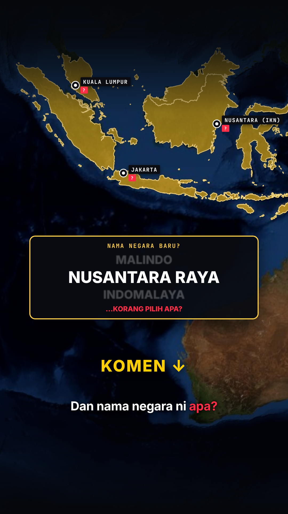

01 · 0:00
Hook · ZIP
"Bayangkan… Malaysia dan Indonesia jadi satu negara."
EFEK 1: sempadan Selat Melaka → Borneo terbuka macam zip, percikan cahaya ikut slider. Tag kecil "VIDEO HIPOTETIKAL". Tajuk WHAT IF?

02 · 0:03
Gelombang emas
"Apa jadi?"
Zip habis → biru + merah meletup jadi gelombang emas dari tengah, skrin bergegar, bunyi bass drop.

03 · 0:05
Penduduk · ranking
"324 juta… keempat… 17 juta di belakang Amerika."
EFEK 3: papan ranking, baris emas meluncur naik memotong Pakistan… berhenti di #4, "17 JUTA LAGI KE #3!".

04 · 0:12
Keluasan · DUM!
"2.2 juta km², nombor 12, lebih besar dari Arab Saudi."
EFEK 2: bentuk gabungan tercabut, terbang & dihempas atas Eropah (saiz sebenar). "DUM!" + gelombang debu.

05 · 0:19
Ekonomi · ranking
"Lebih 2 trilion dolar, 16 terbesar."
EFEK 3: Indonesia #17 + Malaysia #34 bercantum, memotong Türkiye, berhenti #16 di bawah Sepanyol.

06 · 0:26
Bahasa
"Semua orang boleh faham bahasa yang sama."
"Apa khabar? 🇲🇾" & "Apa kabar? 🇮🇩" bertemu di tengah.

07 · 0:30
1963
"Maphilindo… tak pernah jadi."
Semenanjung + Filipina + Indonesia menyala (Sabah/Sarawak belum masuk), cop TAK PERNAH JADI.

08 · 0:37
Jiran rapat 🤝
"Hakikatnya hari ni, dua negara berdaulat… tapi tetap jiran paling rapat."
Peta kembali 2 warna. Karikatur Anwar & Prabowo jalan & berjabat tangan, kilauan di tangan, nama + gelaran.

09 · 0:42
Slot nama
"Ibu negara kat mana? Nama negara apa? Komen."
EFEK 5: mesin slot berpusing MALINDO… NUSANTARA RAYA… INDOMALAYA… berhenti "???". Pin KL/Jakarta/IKN, KOMEN ↓.